| Gambar |
|---|
| 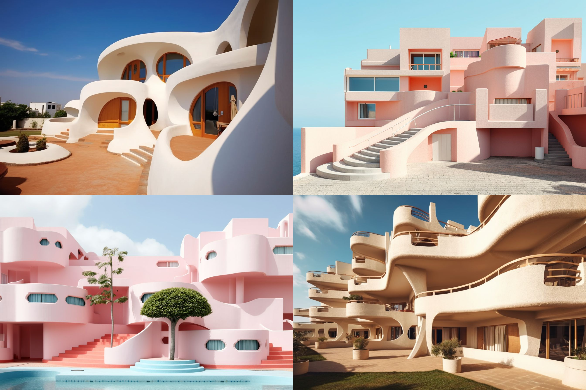 |
| carefree architecture --ar 3:2 |
| 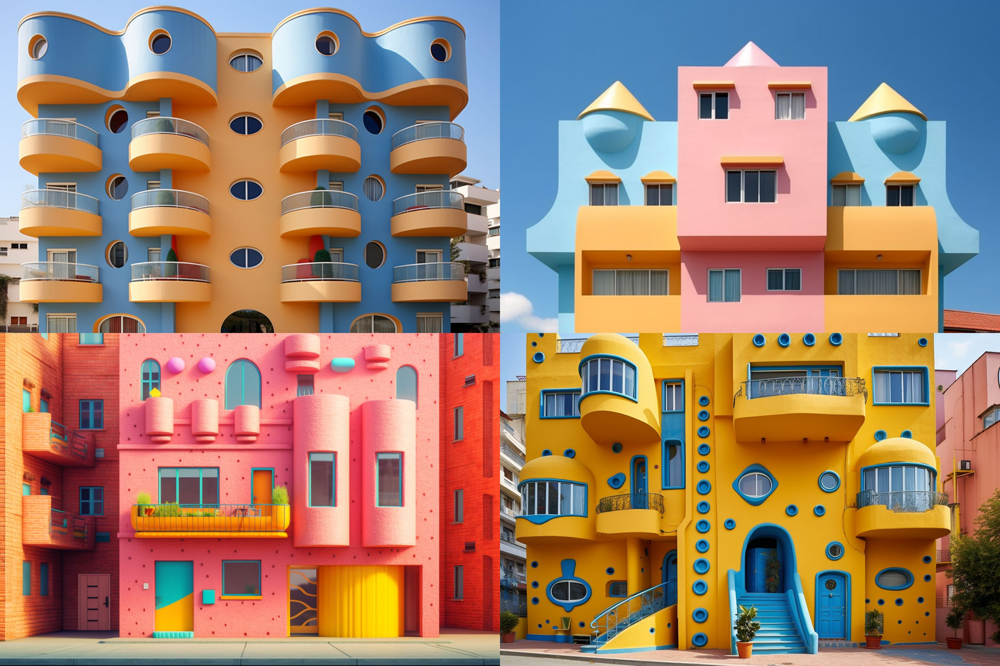 |
| cheerful architecture --ar 3:2 |
| 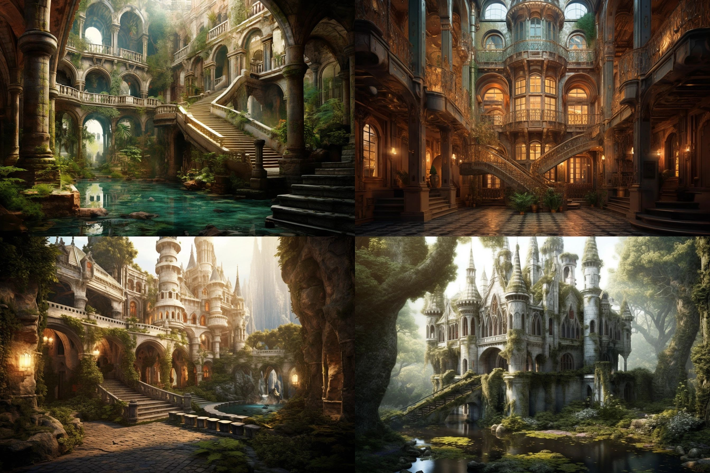 |
| enchanting architecture --ar 3:2 |
| 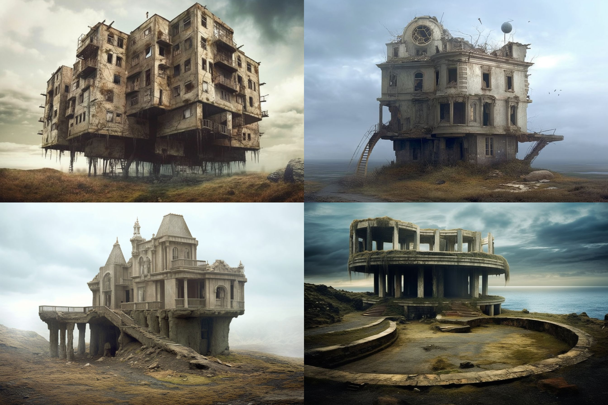 |
| forlorn architecture --ar 3:2 |
| 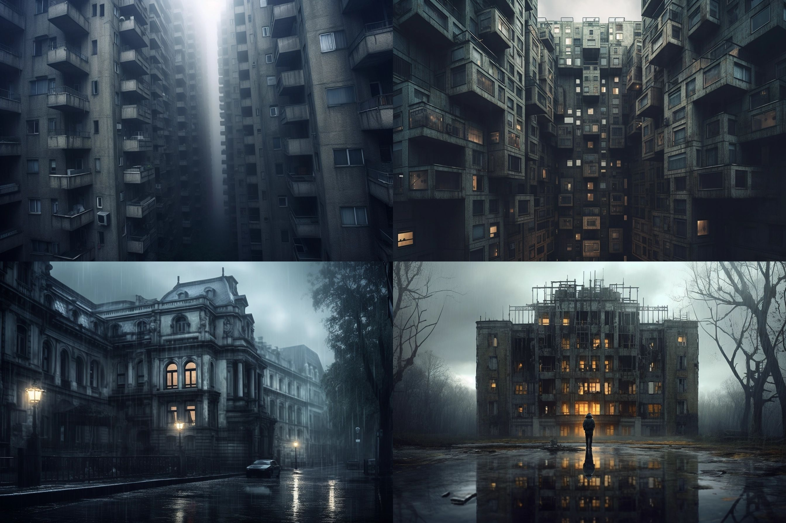 |
| gloomy architecture --ar 3:2 |
| 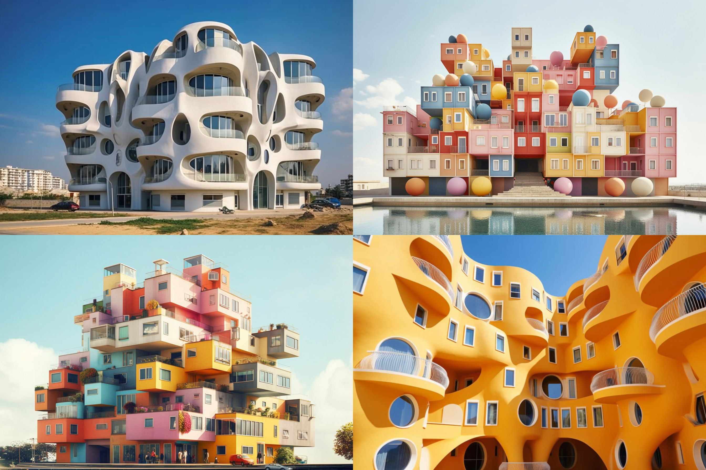 |
| jubilant architecture --ar 3:2 |
| 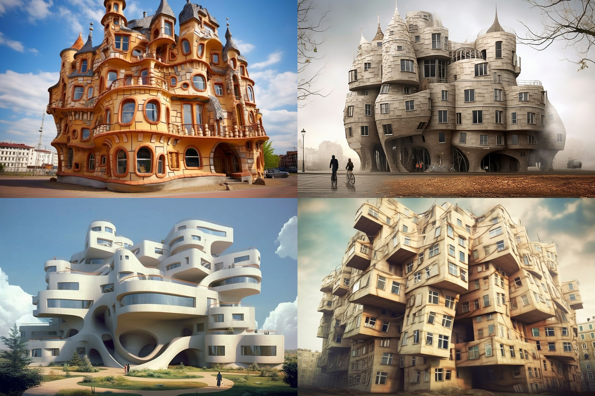 |
| mischievous architecture --ar 3:2 |
| 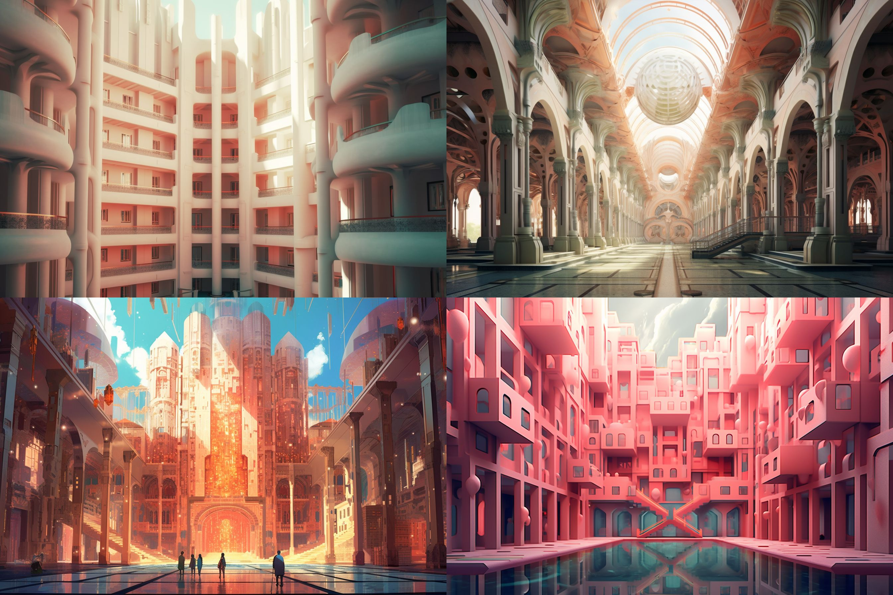 |
| radiant architecture --ar 3:2 |
| 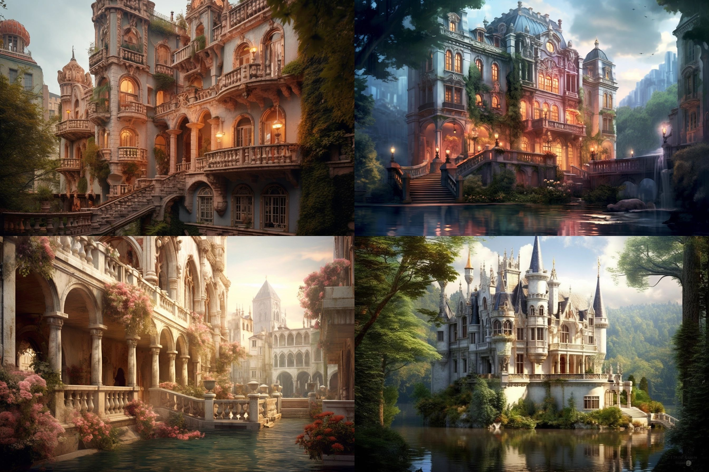 |
| romantic architecture --ar 3:2 |
| 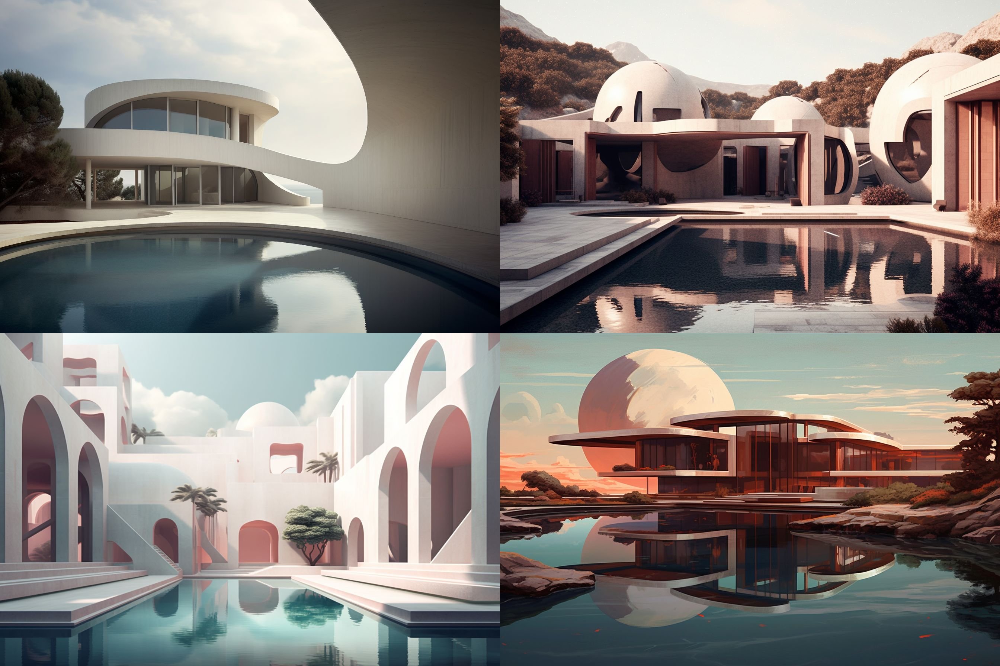 |
| serene architecture --ar 3:2 |
| 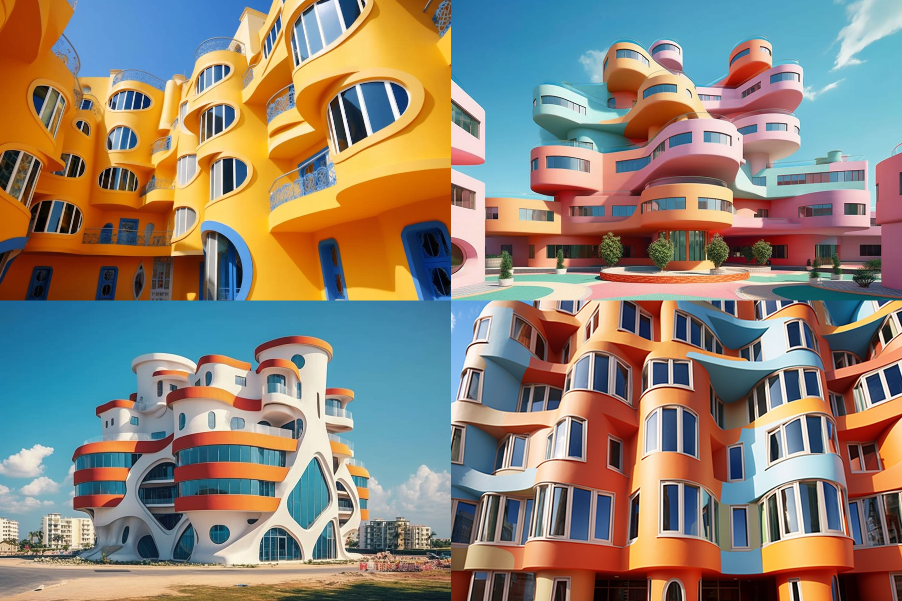 |
| vivacious architecture --ar 3:2 |
| 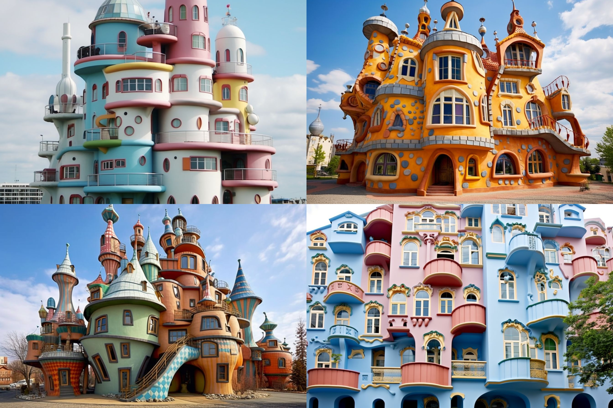 |
| whimsical architecture --ar 3:2 |